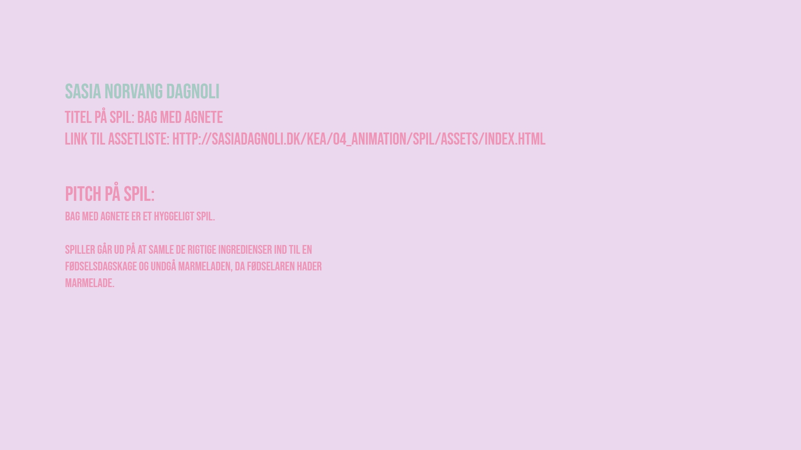

Assetliste og designdokumentation - 04.01.05

I denne opgave skulle vi lave et udvidet styletile til vores spil.
Her skulle der blandt andet indgå de assets der skulle være med i spillet, UI-elementer og stil inspiration
Jeg havde fået inspiration fra en del online bagespil, og gik efter en farverig og nuttet stil.
Jeg ændrede småting efterfølgende. Såsom vinderskærm og taberskærm og måden livene skulle vises på.